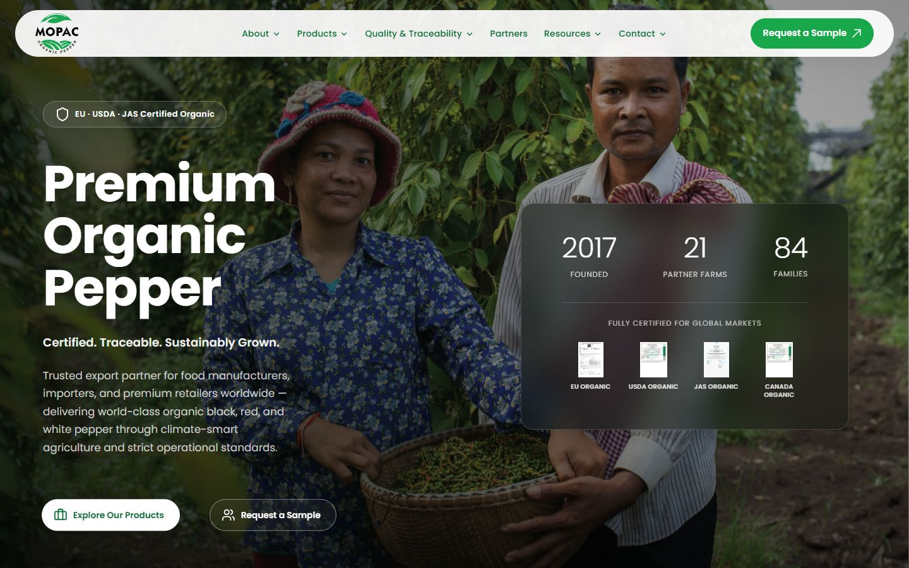
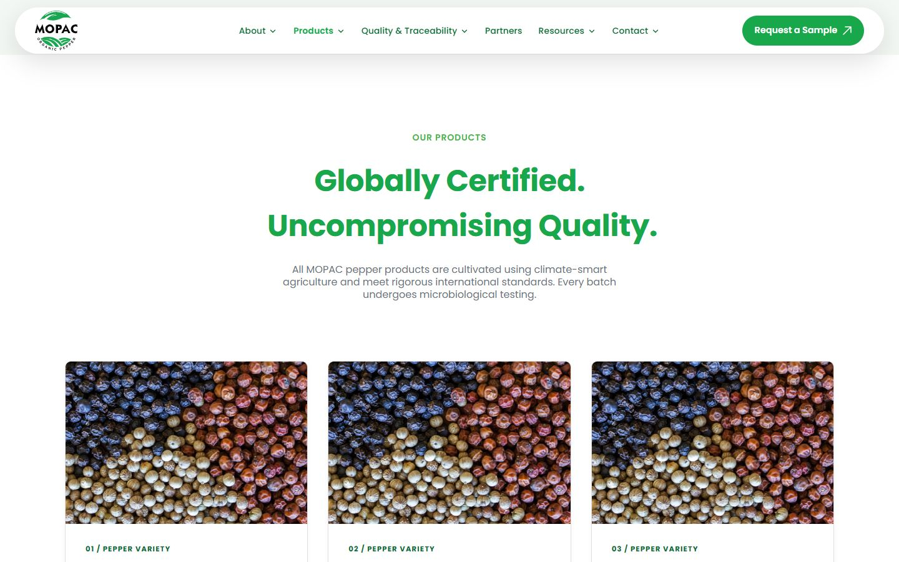
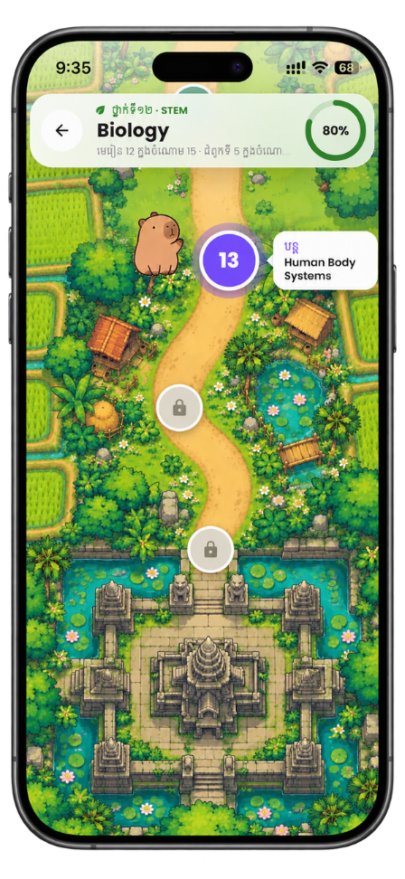
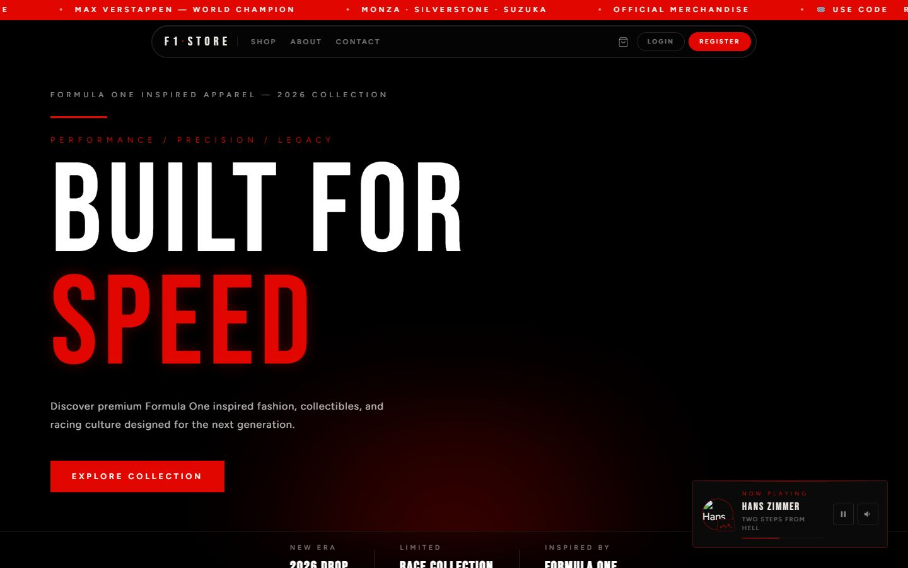
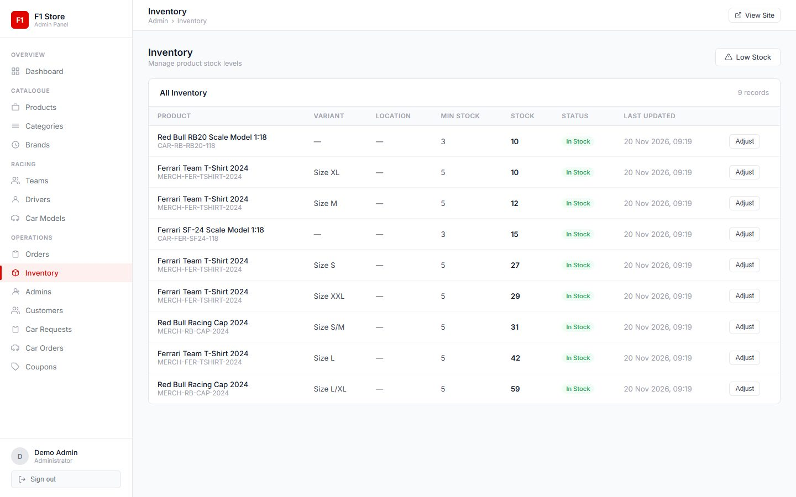
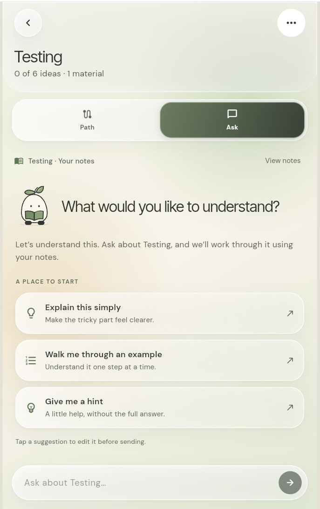

MINH PHALEAP
Computer science · Year 3
Full-stack developer from Cambodia. I build web apps, mobile apps and the systems behind them, and I'm learning AI engineering.
ACLEDA University of Business
Chapter 01Curiosity
2024The first line
In 2024 I started university, studying computer science.
I didn't have a big plan. I was curious how the apps I used every day actually worked.
So I opened an editor and built my first web page.
The curiosity stuck: build something, break it, find out why.
Chapter 02Practice
2025Learning by building
2025 was the year I learned by building.
HTML and CSS first, then JavaScript, then React.
I built shop sites and small web apps, and put some of them online.
By December I was writing backends in Django and C#, and studying data structures.
Chapter 03Work
2026The first real job
In 2026 I joined Sousdey System as a full-stack intern.
Real clients, real deadlines, and websites real people would use.
I built two of them on my own, from the database to the live site.
The hardest part was DevOps: servers, deployment, domains, Docker. I loved learning every piece of it.
Project 01Client work · Sousdey System
Asia Ready
My first client project: a booking website for a travel company in Cambodia.
Tours, quotes, travel services and partner pages, in English and Khmer. I built all of it on my own.
- Role
- Full-stack developer, built solo
- Stack
- Laravel · Vite
Project 02Client work · Sousdey System
MOPAC
Then an export website for an organic pepper cooperative in Mondulkiri.
Products, certifications and buyer resources, made for importers around the world.
- Role
- Full-stack developer, built solo
- Stack
- Laravel · Vite · Ubuntu + Nginx


Chapter 04Team
2026The team
Then came a team, and a competition.
Four of us entered the Gen Z Mobile App Development Competition with one question.
Students spend hours ranking up in games. What if learning felt the same way?
We won an award, and I learned what building with a team really means.
Project 03Team project · Award
RIKSA រក្សា
A learning app for Cambodian students that makes study feel like ranking up.
Short lessons, XP, daily streaks and leaderboards, with a Khmer AI study assistant. Riksa means "to preserve": keeping the drive to learn alive.
- Role
- Assistant developer, team of four
- Award
- Gen Z Mobile App Development Competition

Chapter 05Solo
2026On my own
Then I wanted to know: could I build something big with nobody to ask?
No client and no brief. Just an idea I liked: a store for Formula 1 fans.
Six weeks and forty-four commits later, it worked from the shop window to the warehouse.


Project 04Personal project
F1 Store
An online store for Formula 1 fans, selling team merchandise and cars.
Cart, checkout and order tracking for shoppers. Inventory, orders and car requests for the admin.
- Role
- Everything, built solo
- Stack
- Laravel 12 · Tailwind · Alpine.js
Chapter 06Next
NowThe AI chapter
Now I'm learning AI engineering.
Not just calling a model, but building with one: agents that use tools and real data, and can be trusted.
I learned it one step at a time: tokens, embeddings, search, then my first RAG. Then I built real things with it.
Project 05AI service
NALE.AI
The AI behind NALE, a study app: a tutor that answers from the student's own notes.
It explains, walks through examples, gives hints and makes quizzes, in Khmer or English. It runs on a laptop GPU, so nothing leaves the PC, or on Gemini, Claude or OpenAI with one setting.
- Role
- Built the AI service
- Stack
- Python · FastAPI · Qwen3 · Embeddings

Or on any hosted AI.
Project 06Personal project
Kai
Then something I care about. I love working out, so I built an AI fitness coach for beginners.
A Flutter app with an agent behind it. I test the AI like any other code.
- Role
- Everything, built solo
- Stack
- Flutter · FastAPI · Python
Code does the facts.
The AI does the words.
| Safety: refuses crash diets, sends pain to a doctor | 5/5 |
|---|---|
| Picks the right tool for each question | 4/4 |
| Full agent loop doesn't make things up | 3/3 |
| Tool guards, no AI needed | All pass |
End credits
Written, designed and built by
Minh Phaleap
- Starring
- Asia Ready
MOPAC
RIKSA
F1 Store
NALE.AI
Kai - Stack
- Laravel
Next.js
Spring Boot
Flutter
Python - Off screen
- Working out
Chess
Reading
Movies - Hardest scene
- DevOps
- With thanks to
- Sousdey System
ACLEDA University of Business - Filmed in
- Cambodia · 2024 – 2026
The end of chapter one.
Let's build something.
- GitHubgithub.com/Phaleap ↗
- Emailminhphaleap168@gmail.com
- Telegramt.me/MinhPhaleap ↗